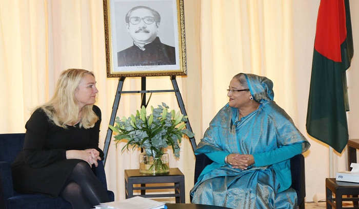
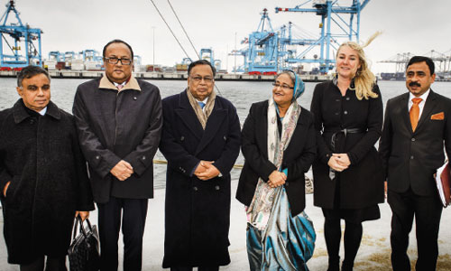
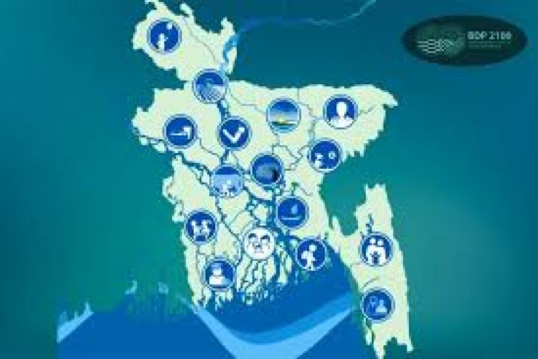

DELTA PLAN IMPLEMENTATION : Netherlands to Help Bangladesh
About Bangladesh Delta Plan (BDP), 2100
The Bangladesh Delta Plan (BDP) 2100 is a long term integrated techno-economic mega plan that integrates all delta-related sector plans and policies, enveloping a Delta Vision and strategies that make it possible to integrate sector plans and policies for the long term and to present actionable interventions with a roadmap for realization.
Government of Bangladesh has approved the Delta Plan 2100 on September 4, 2018 to secure the future of water resources and mitigate the likely effects of climate change and natural disasters.
The Bangladesh Delta Plan (BDP) 2100 is a broad-based long-term vision about the likely changes and necessary intervention to make the Bangladesh Delta a safe by the end of the 21st Century. Thus, an integrated, comprehensive and long-term Delta Vision has been stated as:
“Achieving safe, climate resilient and prosperous delta”
The Mission for BDP 2100 is formulated as:
“ Ensure long term water and food security, economic growth and environmental sustainability while effectively reducing vulnerability to natural disasters and building resilience to climate change and other delta challenges through robust, adaptive andintegrated strategies, and equitable water governance ”.
This long-term vision needs to be translated into specific goals or targets for its implementation. This is done by combining long term development outcomes in terms of economic growth and poverty reduction in the Perspective of 2041 with targets for reducing long term vulnerability from water and climate change related hazards plus targets for environmental conservation.
BDP 2100 approach to long term goals:
The BDP 2100 proposes 3 higher level national goals and 6 BDP 2100 specific goals that contribute to achieving these higher-level goals.
Higher level goals:
Goal 1: Eliminate extreme poverty by 2030;
Goal 2: Achieve upper middle-income status by 2030and
Goal 3: Being a Prosperous Country beyond 2041
BDP 2100 specific goals:
Goal 1: Ensure safety from floods and climate change related disasters;
Goal 2: Enhance water security and efficiency of water usages;
Goal 3: Ensure sustainable and integrated river systems and estuaries management;
Goal 4: Conserve and preserve wetlands and ecosystems and promote their wise use;
Goal 5: Develop effective institutions an- d equitable governance for in-country and trans-boundary water resources management; and
Goal 6: Achieve optimal and integrated use of land and water resources.
Strategies

Bangladesh Hotspot Area
Strategies developed at 3 Levels.
National Level:
Flood Risk Management
Fresh Wate
Hotspot Level:
Coastal Zone (27, 738 sq. km)
Barind and Drought Prone Areas (22,848 sq. km)
Haor and Flash Flood Areas (16,574 sq. km)
Chattogram Hill Tracts (13,295 sq. km)
River Systems and Estuaries (35,204 sq. km)
Urban Areas (19,823 sq. km)
Cross-cutting issues:
Sustainable Land Use and Spatial Planning
Agriculture, Food Security and Livelihood
Trans-boundary Water Resources Management
Dynamic Inland Water Transport
Blue Economy
Renewable Energy
Earthquakes
Investment Cost of the BDP 2100 and Financing Options
The Dutch officials may be informed that BDP 2100 Investment Plan (IP) consists of a total of 80 projects: 65 are physical projects, and 15 are institutional and knowledge development projects at the first phase up to 2030. Its total capital investment cost is BDT 2,978 billion (US$37 billion). All projects can be started within the next eight years, though given the scale and programmatic nature of some investments, construction in some cases will extend over decades.
Total investment need for new projects and maintenance of new and old projects is about 2.5% of GDP per annum. Presently it is only 0.8% of GDP.
Out of the total required 2.5% of GDP, some 0.5% of GDP could be funded by the private sector.
About 2% of GDP would need to be executed through the public sector. Of which about 0.5% of GDP would need to be spent on O&M activities and the remaining 1.5% of GDP should come under the BDP 2100 IP. It may be noted that at present O&M is very much neglected and the actual amount may not even be more than 0.1% of GDP.
Bangladesh has undertaken a project of 4 years to support and follow-up implementation of BDP 2100 with assistance of the Government of the Netherlands. The following projects of BDP 2100 IP are being implemented by the GOB:
Dredging and Excavation of Canals and Small Rivers in 64 Districts (1st Phase): Total Project Cost – BDT 2279.55 Crore (US$ 268 million). The project is being implemented by Bangladesh Water Development Board (BWDB).
Dredging/Re-excavation of Bangali-Karatoa-Fuljor-Hurasagor River System & Bank Protection Project: Total Project Cost- BDT 2335.60 crore ((US$ 275 million). BWDB has already started execution of the project.
Urir Char Cross Dam in Noakhali project with total cost of BDT 533 crore (US$ 63 million is now awaiting for approval of the Planning Commission.
World Bank has already expressed its interest in financing BDP 2100 IP. The Bank has undertaken a Feasibility Study for “The Multi-Phase Jamuna Integrated River Basin Management (a part of Integrated Jamuna-Padma Rivers Stabilization and Land Reclamation) project, which is expected to be completed this year.
Investment Priorities
Priority areas are-flood protection, river erosion control, river management including river training and navigability, urban and rural water supply and waste management, and urban flood control and drainage. These are highly capital-intensive investments.
Firstly, Investments in flood control, river erosion, river management including dredging, training and navigability are amongst the highest priority investments areas and will likely absorb 35% of total Delta investments.
Secondly, the investments in urban water supply, sanitation, waste management and drainage in major cities coupled with rapidly growing concentration of population and economic density in these areas suggest that this category will absorb at least 25% of all delta investments.
Thirdly, the lack of water and sanitation services in small towns and rural areas suggest that the need to achieve the government’s targets for safe water supply and sanitation for these areas will call for massive investments in these services. This category may absorb as much as 20% of total BDP 2100 investment up to FY2031.
Signed Documents
MoU between Government of Bangladesh and the Netherlands on May 2012 for formulation of Bangladesh Delta Plan 2100
MoU between Government of Bangladesh, the Netherlands, and the World Bank on 16 June 2015 regarding strengthening water management in Bangladesh Delta
‘The Dutch cooperation in Bangladesh’s water sector development has long been continuing. We’ll also help implement Bangladesh’s Delta Plan-2100 by providing all sorts of support,’ said Dutch minister of infrastructure and environment Melanie Schultz van Haegen.
Her assurance came during a presentation of the Dutch delta approach at Grand Hotel Amrath Kurhaus in the Hague, the administrative capital of the Netherlands, in the presence of Bangladesh prime minister Sheikh Hasina.
The ministry of infrastructure and environment of the Netherlands arranged the event which was attended by water resources experts from both the countries.
Staff delta programme commissioner of the Netherlands Jas Van Alpnes and joint chief of the general economics division of the planning commission, Bangladesh Mafidul Islam gave an overview on the Netherlands delta approach and Bangladesh’s Delta Plan-2100 respectively.
The Dutch minister said the Netherlands and Bangladesh have been facing common challenges in controlling flood. ‘So, we need collaborative measures to encounter these challenges,’ she said.
Putting emphasis on sharing knowledge and experience for practical solution of the problems in water resources management, Melanie Schultz said the delta plan is very crucial for both the Netherlands and Bangladesh.
The governments of Bangladesh and the Netherlands are working together to formulate a long-term plan for management of the Bangladesh delta, known as the Bangladesh Delta Plan – 2100.
Although the primary objective of consultations is to listen to stakeholders about the constraints they face on a day-to-day basis and the challenges in their area, they also serve the additional purpose of stakeholder sensitisation. Aiming to enable the government to address future challenges of delta management, the Delta Plan 2100 will develop a long-term vision of the Bangladesh Delta’s future.